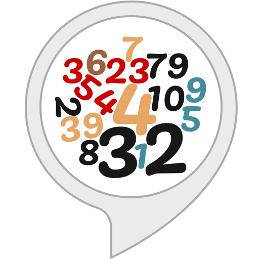

Adivina el número
Indicaciones
1. Ingresa un número del 1 al 10.
2. Verificar si el numero ingresado es el acertado
3. Si no aciertas se te indicará que el numero buscado es mayor o menor
4. Si el número ingresado es el correcto, te mostrará un mensaje indicando que acertaste.
5. Puedes volver a jugarlo.
El número secreto es {{ mayorMenor }} {{ num }}
¡¡¡Enhorabuena!!!
Has acertado, el número secreto es el {{ num }}
Adivina
Volver a Jugar